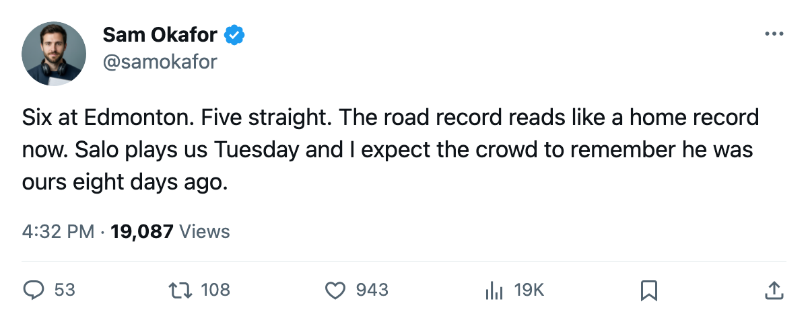

LEAFS 6, OILERS 2: Five straight, 25-9 on the road, and Sami Salo waits in Calgary
Toronto wins its fifth in a row at Edmonton and turns toward a former blue line partner on Tuesday
 Sam OkaforLeafs beat reporter · Queen City Telegram
Sam OkaforLeafs beat reporter · Queen City Telegram
 Toronto Maple Leafs beat
Toronto Maple Leafs beat  Edmonton Oilers 6-2 on the road on 2005-03-10, their 5th straight win and 25-9 on the road. Toronto fired 26 shots against Edmonton's 23 and leads the Northeast by 30 points with 12 games remaining.
Edmonton Oilers 6-2 on the road on 2005-03-10, their 5th straight win and 25-9 on the road. Toronto fired 26 shots against Edmonton's 23 and leads the Northeast by 30 points with 12 games remaining.
The 5-game run has produced 20 goals for and 7 against. The stretch opened with a 5-1 win at  Ottawa Senators on 2005-03-04 and has included two opponents from the Northwest division.
Ottawa Senators on 2005-03-04 and has included two opponents from the Northwest division.
 Marian Gaborik98 carried the Bureau's Development Index at +6 entering this game, sitting atop the league's risers list with 84 points in 70 games.
Marian Gaborik98 carried the Bureau's Development Index at +6 entering this game, sitting atop the league's risers list with 84 points in 70 games.  Mats Sundin91 has 78 points in 70 games at 19.9 minutes a night, and
Mats Sundin91 has 78 points in 70 games at 19.9 minutes a night, and  Brad Richards87 has 61 in 68 games.
Brad Richards87 has 61 in 68 games.
Salo returns
 Sami Salo82 was traded from Toronto to Calgary on 2005-03-04. He plays at home to his old club on 2005-03-13, three days from now. Toronto leads the season series 1-0-0 with one overtime win and a 10-3 goal margin.
Sami Salo82 was traded from Toronto to Calgary on 2005-03-04. He plays at home to his old club on 2005-03-13, three days from now. Toronto leads the season series 1-0-0 with one overtime win and a 10-3 goal margin.
Calgary is 22-38-6, 54 points, last in the Northwest. The Flames have lost 1 straight and carry a 10-22 home record. They have not beaten Toronto this season.
The clock
The trade deadline falls on 2005-03-19, eight days from today. Toronto sits at 112 points with a 334-168 goal differential, the best in the league by both measures. Does a club that leads by 30 points in its own division buy, or stand pat?
Toronto Maple Leafs next plays at  Calgary Flames on 2005-03-13, then at
Calgary Flames on 2005-03-13, then at  Vancouver Canucks on 2005-03-15 before returning home for
Vancouver Canucks on 2005-03-15 before returning home for  New York Islanders on 2005-03-18.
New York Islanders on 2005-03-18.
